小吳是一位上進的年輕人，就讀物理研究所碩二。在一個風和日麗的下午，他收到訂購的「和蓮光電 SLM 」。
小吳打開包裝，讀完說明書，打開電腦立刻連到「和蓮光電客戶專區」的網頁，畫面如下：
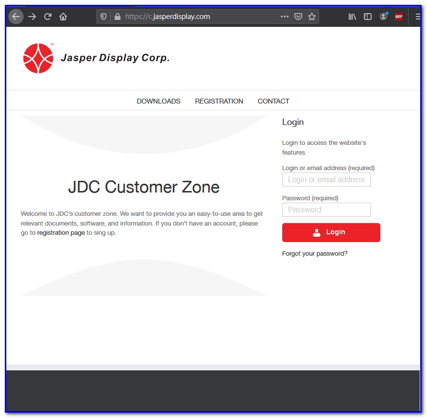
小吳發現自己是新客戶，還沒註冊成為會員，不能登入，所以點了「 REIGISTRATION 」想要註冊，畫面如下：
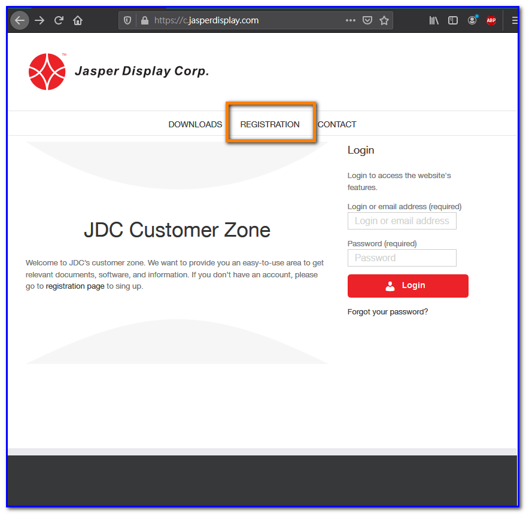
電腦跳到新會員的註冊填寫資料畫面，如下：
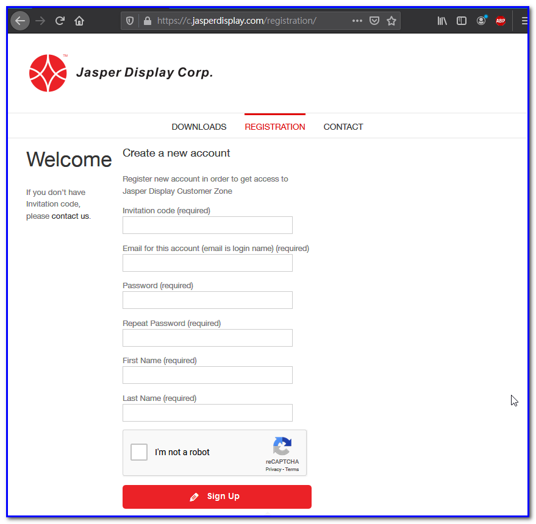
他打開產品包裝盒，找到一張神秘的小紙條寫著「 Invitation code to access JDC product server: 123456abcd」，填入第一格；接著輸入 email （以後的會員登入帳號）、兩次密碼、名、姓、防機器人與網頁爬蟲的勾勾，最後按下「 Sig Up 」按鈕，畫面如下：
接著網站出現小圓圈，在資料庫內檢查 invitation code 是否正確、與帳號是否已被使用，畫面如下：
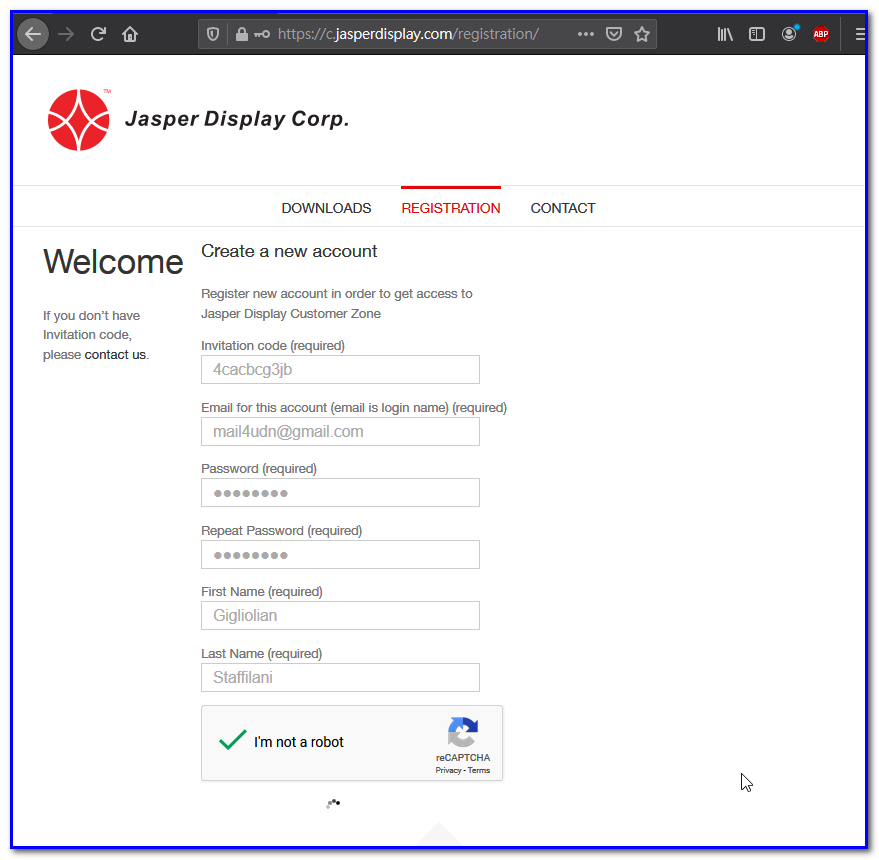
當 invitation code 正確、帳號也沒被註冊過，電腦中央出現「 Please check your email account and open the verification link to confirm your registration 」的文字，畫面如下：
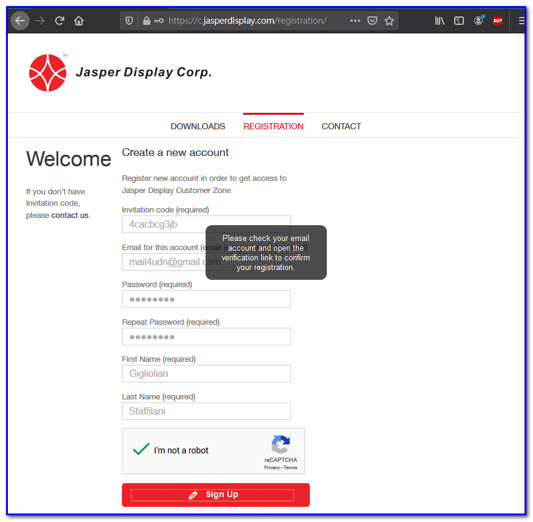
這段文字的意思是「請小吳證明他是這個 email 帳號的擁有者，所以請他到信箱內按下確認連結」，所以小吳就開啟他的 email 信箱，果然收到一封確認信，示意畫面如下：
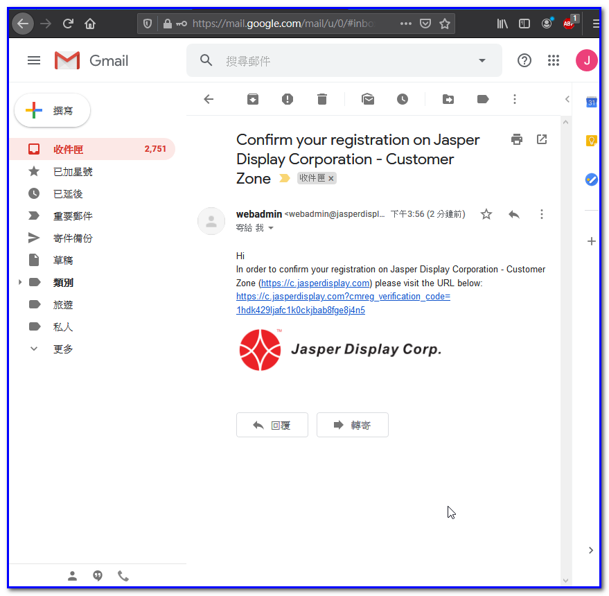
小吳伸出他的纖纖玉手，在畫面點了確認連結：
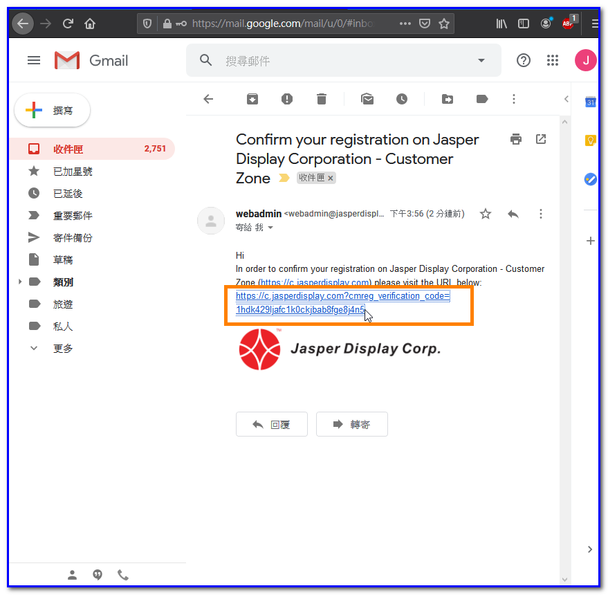
過了一支菸的時間，電腦跳到一個新的畫面，中央出現一段文字「 Your account has been verified. You can login now. 」，畫面如下：
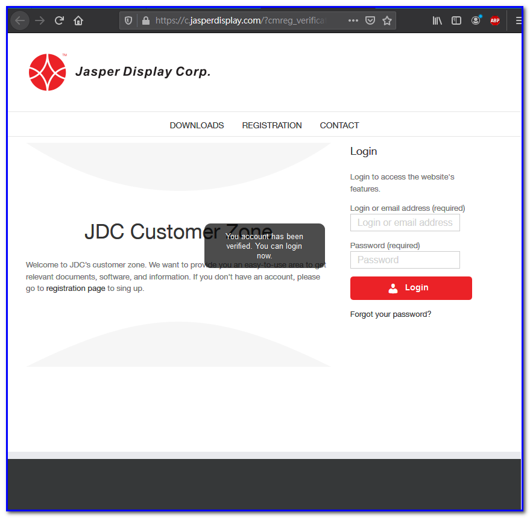
同一個時間，小吳的 email 信箱也收到一封來自 JDC 的歡迎信：
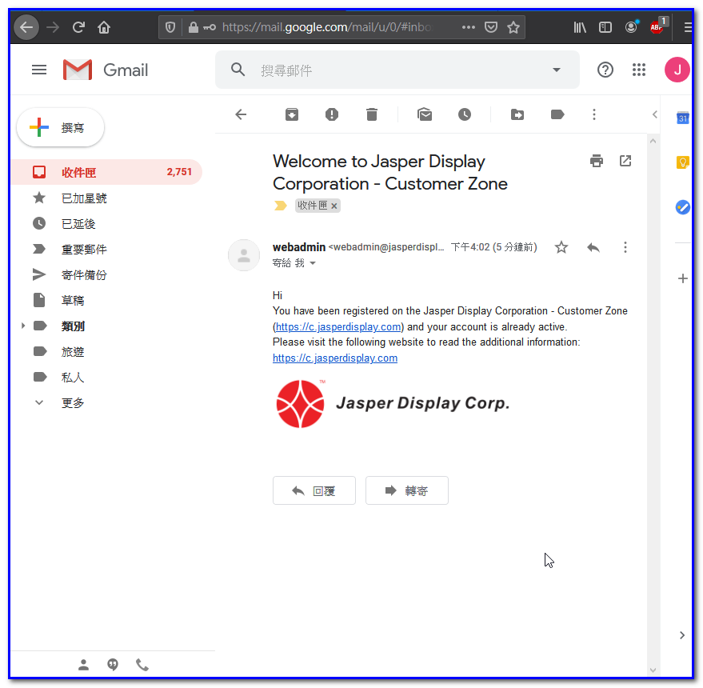
現在他連到「 DOWNLOAD 」下載區，看到 SLM 的相關軟體與使用手冊：
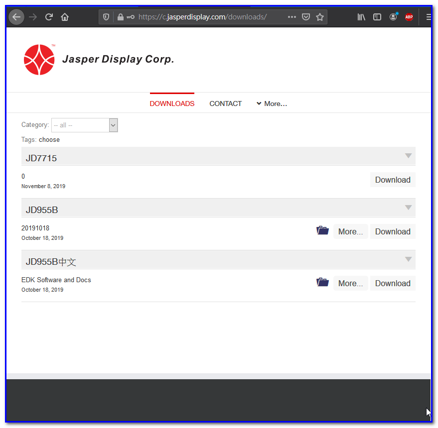
時光飛逝，一轉眼就過了半年，小吳這次收到趁著 11/11 購物日刷卡買的一台 JDC HUD 頭盔，開心地登入和蓮的客戶專區，按了「 More 」以及選單內的「 Unlock Devices 」進行產品服務的解鎖：
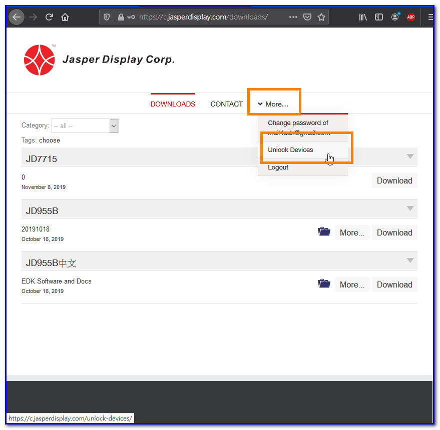
畫面需要輸入 HUD 的 invitation code ，他拿出包裝盒裡附的神秘紙條，照著輸入 invitation code ，然後按下「 SUBMIT 」鈕送出：
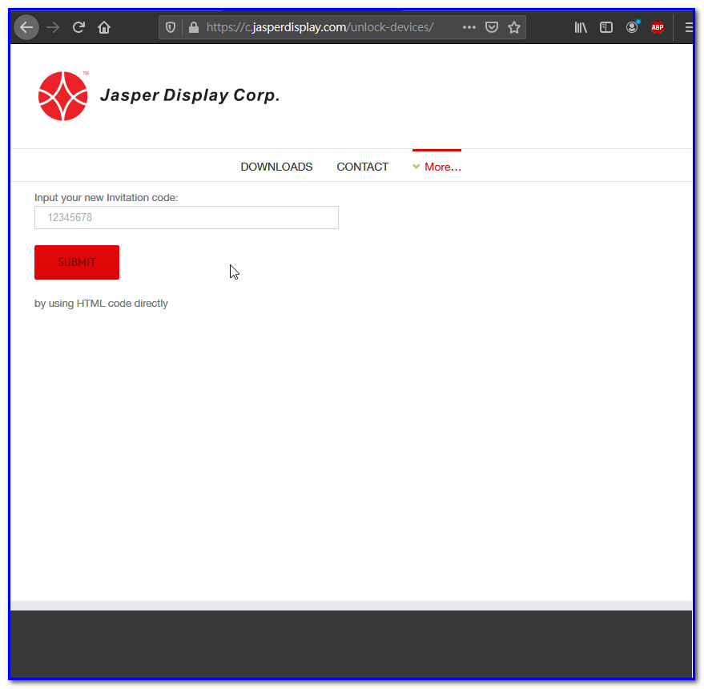
過了三分鐘，畫面出現如下文字，表示 HUD 產品的相關檔案已解鎖：
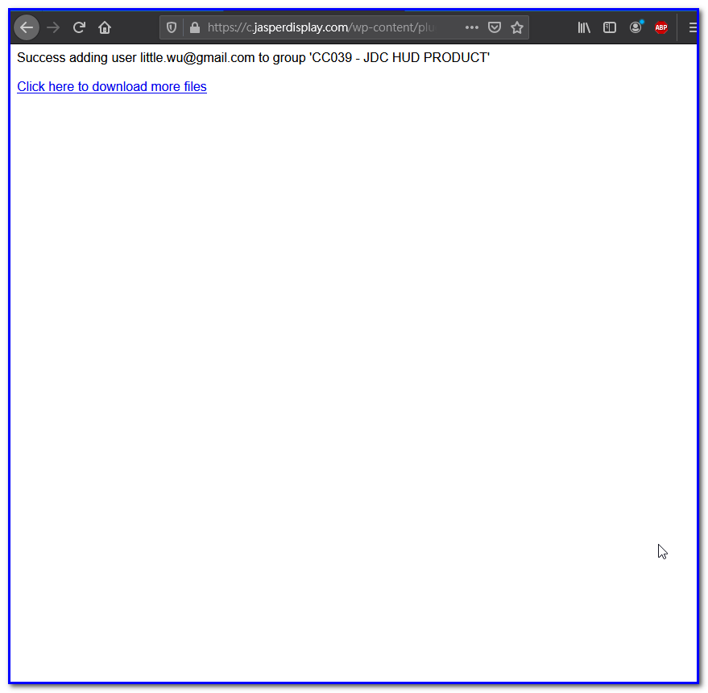
小吳回到「 DOWNLOADS 」下載區，果然看到下載列表內多了 HUD 的軟體與操作手冊：
接著小吳靠著 JDC 的產品順利賺進人生的第一桶金，在台北市置產、交了三個女朋友、跟最溫柔那位結婚、生子，過著幸福又美滿的勝利人生！